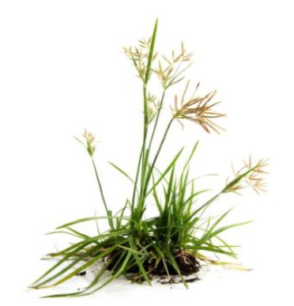
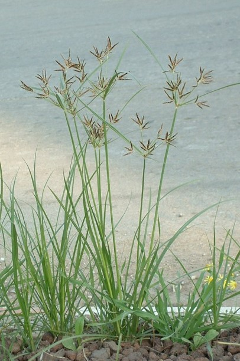
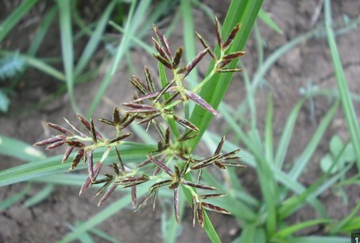
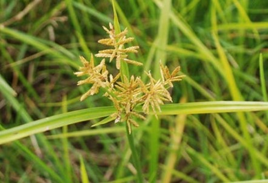

PHOTOS:




Botanical Name: Cyperus rotundus
Common name: Nagarmotha
Cyperus rotundus can be found in a wide variety of habitats including cultivated fields, waste areas, roadsides, pastures, riverbanks, sandbanks, irrigation channels, river and stream shores and natural areas. It is cultivated by planting tubers or rhizomes in well-drained soil. It requires moderate watering and full sunlight. Regular weeding is essential to manage its invasive growth and ensure healthy development. Nut grass has notable medicinal uses, particularly in traditional medicine. It is used for its antiinflammatory, analgesic, and antimicrobial properties. The plant is beneficial for treating digestive issues like indigestion, constipation, and bloating. Its tubers are also employed in managing respiratory conditions, such as coughs and bronchitis, and in reducing menstrual discomfort. Additionally, nut grass has been used to alleviate symptoms of urinary tract infections and improve overall urinary health. Its broad spectrum of uses highlights its role in managing various ailments through its natural therapeutic properties.